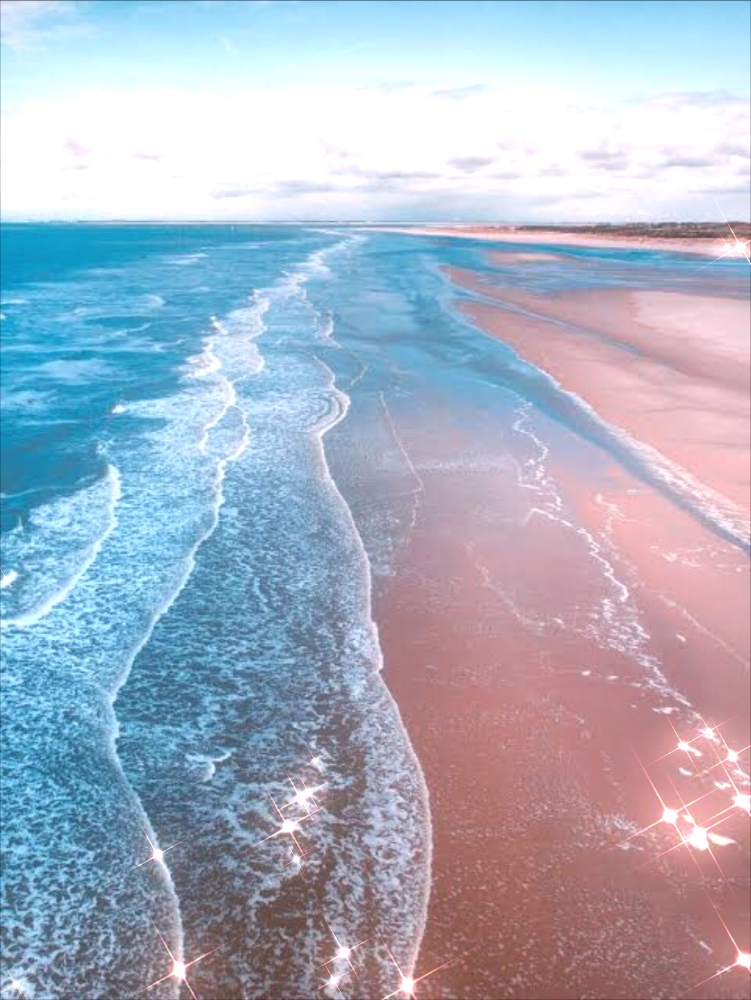
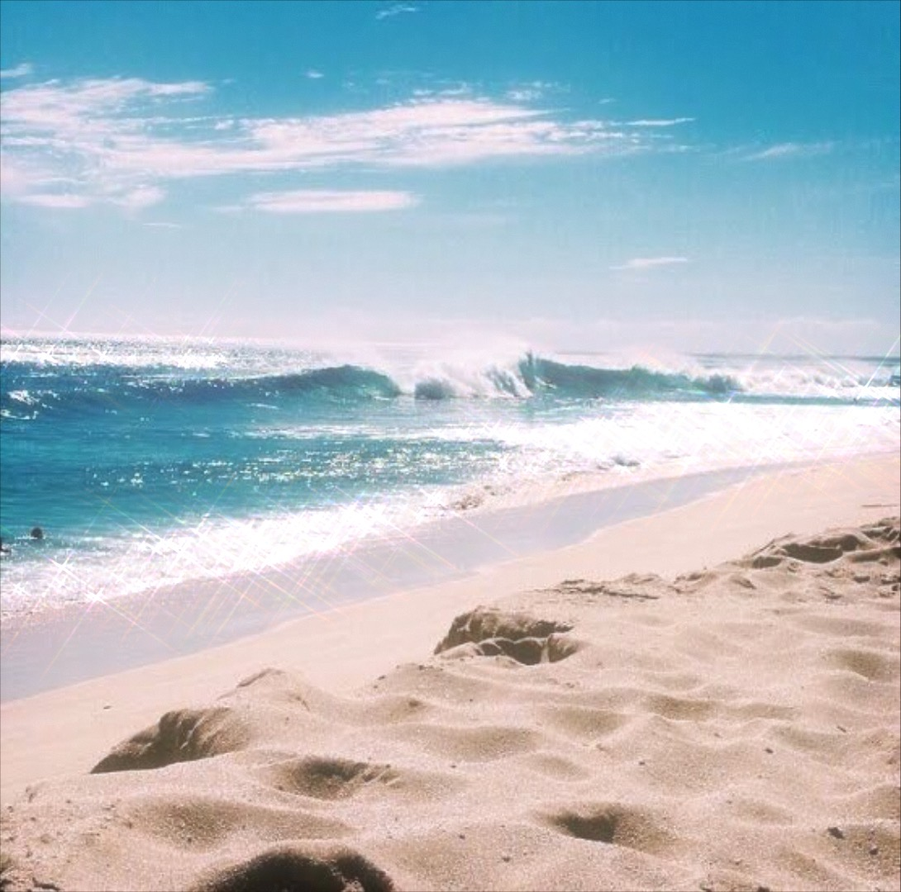
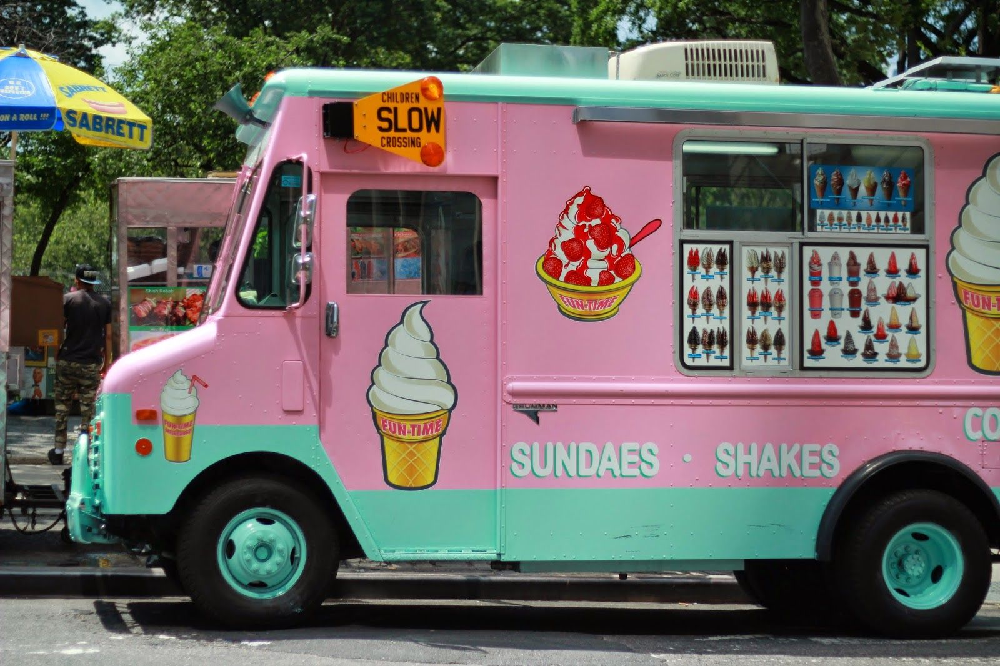
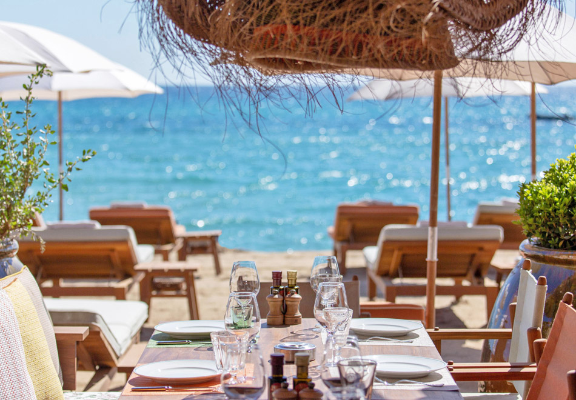
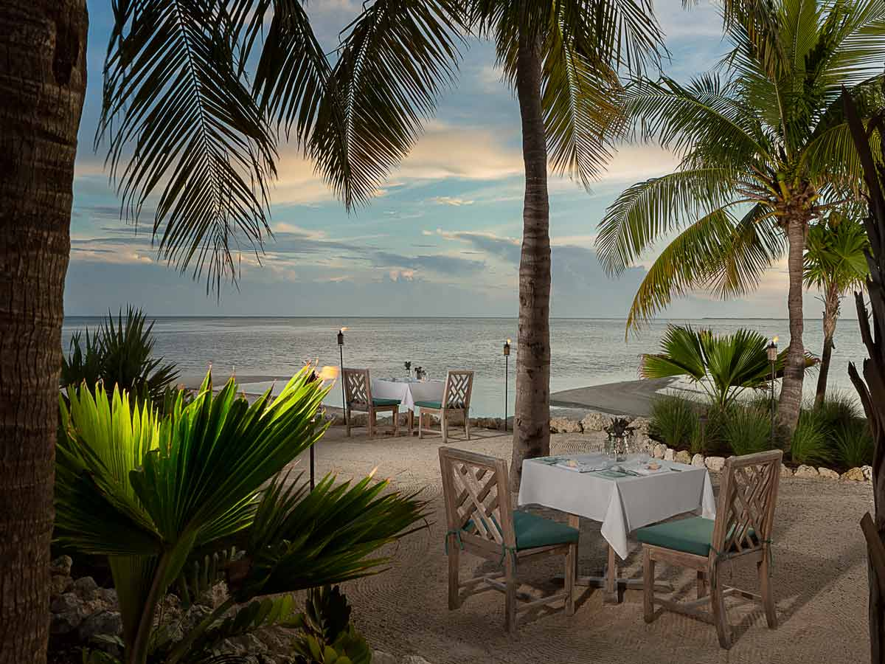

With gloriously golden sand and sparkling blue waters, the Crystal beach offers a day of fun and tranquility.
Feast on chilly ice-cream, relax on sun chairs, collect natural crystals and shells hidden in the sand, and have a nice swim in the ocean!


Where can you dine?
Ice-Cream

Located near the entrance, this particlar Ice-Cream van serves great sweet treats for a hot day at Crystal beach such as the famous blue moon ice-cream or the yellow pineapple ice-cream.
Tropic Tiki Bar

With exotic drinks and colourful fruit dishes being served to customers everyday, this tiki bar is situated near the boardwalk and encites tourists easily with their constant aroma of fruit.
Beachside

This restaurant, located near the Three Palm Trees, is branched off of successful town center restaurant 'Oceanside' and serves excellent seafood, including the popular Clayfish.
The Three Palm Trees

Crowded with civillians and tourists everyday, the Three Palm Trees is the most popular restaurant at Crystal beach. They provide the best Italian food like their tasty pasta or pizza.
Photo gallery


 Back
Crystal Beach Hotel
Back
Crystal Beach Hotel